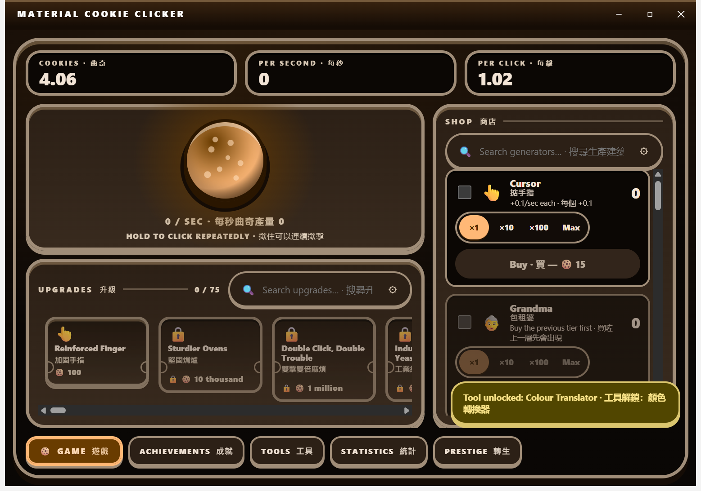
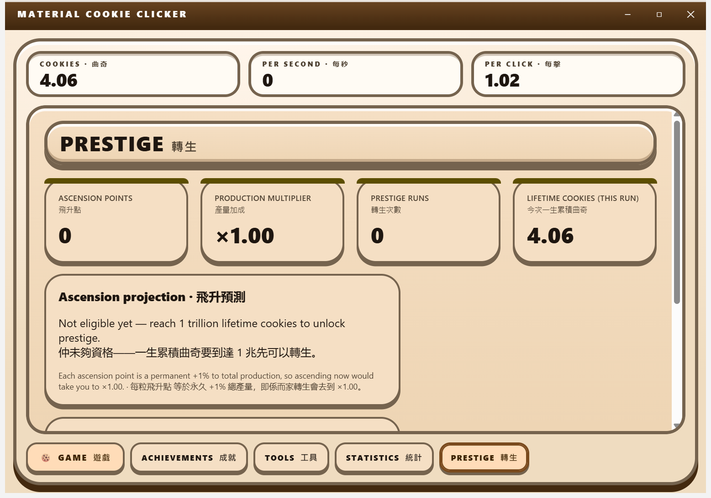

Material Cookie Clicker
A cookie clicker for Windows where the application's own features — the command palette, the regex builder, the authenticator, the file converter — are the game's tech tree. Free, unsigned by policy, offline by design, and bilingual in English and Hong Kong Cantonese.
What it is
Click a cookie. Buy fourteen tiers of increasingly unreasonable machinery, from a Cursor up to a Prism. Spend seventy-five upgrades, chase a hundred achievements, catch golden cookies, unlock the application's own twenty features as in-game tools, then ascend and throw it all away for a permanent multiplier. It runs with the network unplugged, it costs nothing, and it never asks you for an account.
撳曲奇。由「掂手指」買到「稜鏡」，十四級越嚟越荒謬嘅機器。用七十五個升級、追一百個成就、執金曲奇、將個應用程式自己二十個功能解鎖做遊戲道具，然後飛昇，全部清晒換返個永久倍數。冇網都玩得，唔使畀錢，唔使開戶口。
Where the project actually is
The game is playable. This release ships the single game surface — HUD readouts, the cookie hero, the docked shop rail and the upgrade ticket strip, all on one screen — plus the Achievements, Tools, Statistics and Prestige tabs. All 109 tests pass, the application builds, and every one of those five surfaces was photographed from the real running build. You can see the photographs in the capture matrix.
Two things are still honestly unverified, and they stay listed here until someone has actually seen them: the narrow-width shop drawer was verified by forcing its breakpoint rather than by really resizing the window; and an unlock toast can briefly overlay shop rows — you can see it happening in the game-surface capture.
- 14Generator tiers
- 78Upgrades
- 100Achievements
- 20Tools in the tree
Those four numbers are counted from the definition lists in the source tree, not from a wish list, and all four are now on screen in the running application: the shop rail lists the generators, the ticket strip counts the upgrades, the Achievements tab counts the badges and the Tools tab counts the tools.
Capture matrix
Five surfaces, five photographs of the real thing. Every image below was captured from the built application — not a mock-up, not a design spec — running on an off-screen desktop, photographed with the Win32 PrintWindow API, mostly in the light theme. The dark “arcade night” theme was captured for the game surface by setting data-theme="dark" on the built renderer’s root element; that capture is below.





No golden-cookie spawn (the spawn window is five to fifteen minutes and nobody has caught one on camera yet), no settings surface, and no genuinely narrow window — the bottom-sheet drawer behaviour was checked by forcing its breakpoint, not by resizing the real application. The prestige confirmation gate ships, but sits below the fold of the Prestige capture.
Download
Windows installer, published on GitHub Releases.
There is no code-signing certificate and there will not be one. Windows SmartScreen will therefore warn you when you run the installer, and you will have to choose “More info” and then “Run anyway” to continue. That warning is accurate: Windows genuinely cannot verify who published this, and no amount of reassurance on a web page changes that. If you are not comfortable with it, do not install it — the full source is on GitHub and you can build it yourself.
Nobody ever pays anything for this application, and it asks for no account, no key and no network access.
The game, playable: the single game surface with the cookie, the shop rail and the upgrade strip, plus the Achievements, Tools, Statistics and Prestige tabs — all bilingual, all offline. The capture matrix above is what it actually looks like.
Not in this release: a settings surface (so the language-mode selector and the funny-level sliders are not reachable yet, and the application is always in bilingual mode), the dark theme is verified for the game surface only.
Every feature area
Each article below describes the behaviour, how it is configured, and how much of it is real today.
-
Cookie clicking and the CPS loop
The primary click target, click multipliers, the cookies-per-second accumulator, and the offline-progress rules that make a closed window honest.
Read more -
The 14-tier generator ladder
Cursor through Prism: fourteen generator tiers, a constant 1.15 cost curve, and the buy-quantity stepper.
Read more -
Upgrades
Seventy-five upgrades: five global ones plus five stacking tiers for each of the fourteen generators.
Read more -
Achievements
One hundred achievements, generated from four milestone families, with a permanent unlock and a marquee toast.
Read more -
Golden-cookie events
A seeded, replayable random-event schedule: frenzy, click frenzy and windfall.
Read more -
The Tools tech tree
Twenty of the application’s own features, doubling as in-game unlockables — and the contract that an unlock never gates the real feature.
Read more -
Statistics
The counters the engine actually keeps, including an honest clock-anomaly count.
Read more -
Prestige (ascend)
A cube-root ascension curve, +1% production per point, behind a two-key destructive-action gate.
Read more -
Bilingual text and the funny-level sliders
English and Hong Kong Cantonese side by side, with two independent 1–5 humour sliders — one per language.
Read more
How this site is built
This site follows the same design system as the game — the v2 “arcade cabinet” specs in design/: radial oven-glow backgrounds, marquee headings on bevelled plates, solid offset shadows with no blur anywhere, 2–7px borders, and the same colour tokens in light and dark. It is explicitly not Material Design 3; the role names (primary, surface, outline) are kept as vocabulary only.
It is also entirely self-contained. There is no CDN, no remote font, no remote image, no analytics and no network request of any kind: the hero cookie is drawn with CSS gradients, the capture matrix loads PNG files committed alongside these pages, the search index is baked into a local module, and the only external addresses anywhere in this site are the two GitHub links, which you have to click.